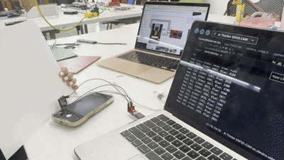
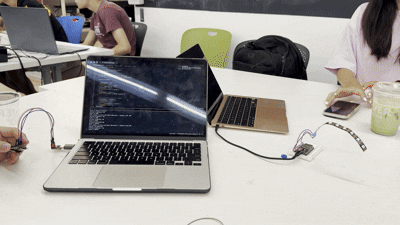

<div class="textcontainer">
<p class="margin"> </p>
<h3>Week 9: Radio, WiFi, Bluetooth (IoT)</h3>
<p class = "margin"></p>
We firstly started with trying to code the ESPCAM to identify different colors and then send that information to a ESP32 dev module which was wired to a LED strip so that would light up the color that was recognized. We connected the ESPCAM to the ESP32 dev module using Wifi.
<p></p>
<p class = "margin"></p>
We started by playing around with the RGB colors in order to code a specific range for each color. However we ran into many problems due to lighting and other factors. What we learned was that since the camera was basically taking pictures and avaraging the color of all the pixels it is very hard to control everything enough in order to make it properly work. It got to a point where everything was being identified as green...
That's when we decided to switch our project and make the camera a type of light sensor. We made it so it would identify lighter and darker colors. If the camera identifies a light environment the LED will stay off, if it identifies a dark environment then the LED will turn on.
<br>
<p></p>
<p class="margin"> </p>
<div class="flexrow">
<a id="btn" href="wk9.zip" download>Download my files from this week!
</a>
</div>
<p class="margin"> </p>
<h4>Assignment: [Program something with IOT]</h4>
</div>